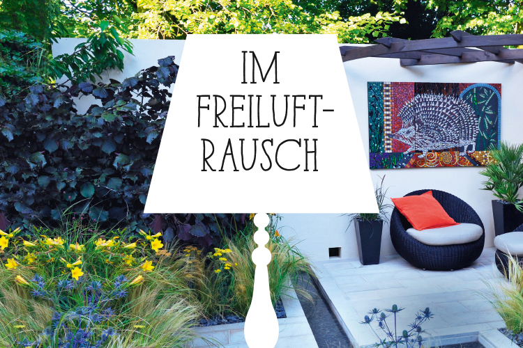
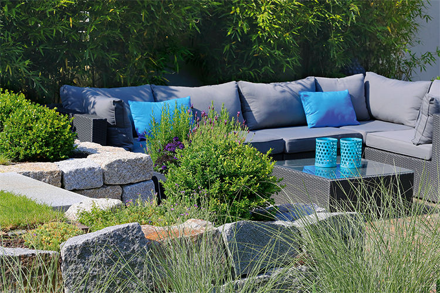
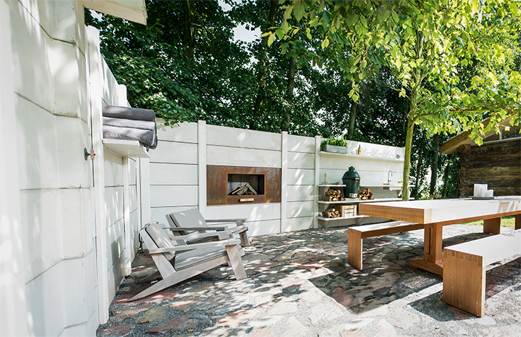
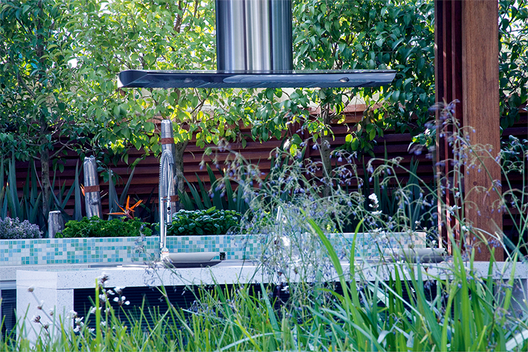
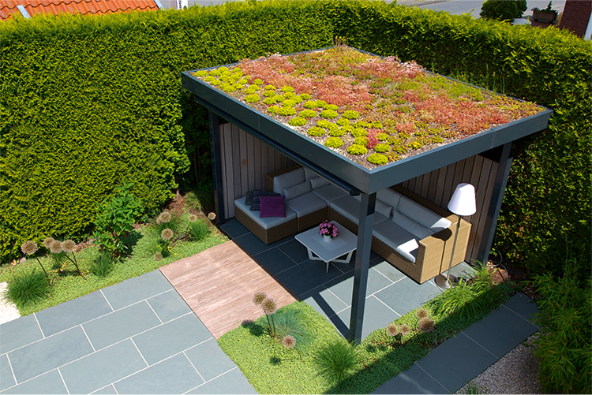
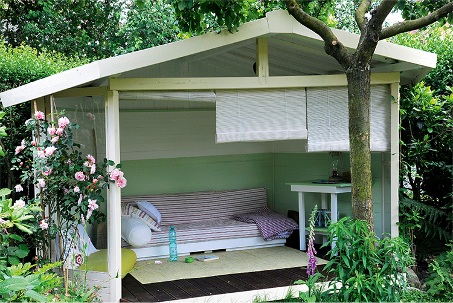
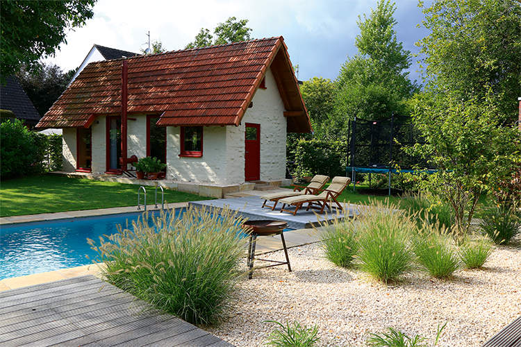

Muss man es noch sagen?
Gärten sind in, mega-in sogar.
Und das Schöne ist: Diese Wertschätzung ist beständig, denn wer es ernst meint mit dem Drang nach draußen, investiert in seinen Garten, um sich dort – im wahrsten Wortsinne – so häuslich wie möglich einzurichten. Gartenbesitzer wollen draußen leben, und entsprechend soll der Garten hergerichtet sein. Experten geben Auskunft, wie das gelingt.

Eingefasst, aber nicht eingemauert: Das Ecksofa steht in einem als Senkgarten gestalteten Bereich.
Die halbhohen Mauern sorgen für Heimeligkeit, ohne zu beengen.
Wer von einem Trend spricht, dürfte maßlos untertreiben. Denn schon seit Jahren und immer vehementer zieht es die Menschen nach draußen – in öffentliche Parks, in Wälder, auf Berge, an den Strand. Outdoor-Kleidung wird mit Vorliebe in der Großstadt getragen, öffentliches Grün im Sommer zum Massengrillplatz, Außengastronomie bis in den Winter attraktiv und jedes Magazin mit dem Wort „Land“ im Titel garantiert ein Verkaufsschlager. Ein immer größerer Teil des Lebens spielt sich unter freiem Himmel ab. Dieses Bekenntnis zum Draußensein ist längst zu einem echten gesellschaftlichen Phänomen, einem essentiellen Bestandteil der Kultur des 21. Jahrhunderts geworden und resultiert – so diagnostizieren Soziologen – aus der Übertechnisierung und der Globalisierung des Lebens in den Industrieländern. Diese provozieren eine Gegenbewegung, eine Besinnung auf echte, einfache, verständliche und im wahrsten Sinne des Wortes begreifbare Dinge. Je künstlicher die Welt auf der einen Seite wird, desto größer scheint ihr Drang nach Natürlichkeit auf der anderen Seite zu sein.
Drang nach Draussen
Wohl dem, der einen Garten hat, denn der kann dieser Lust am Erdigen jederzeit und mit einem einzigen Schritt durch die Terrassentür frönen. Und so beobachten diejenigen, die sich von Berufs wegen mit dem Thema Garten beschäftigen, seit einigen Jahren auch, dass das eigene Fleckchen Grün eine stetig wachsende Wertschätzung erfährt: „Den Spruch vom Garten als grünem Wohnzimmer kennen wir ja schon länger“, konstatiert Gartengestalter Martin Müller von Müller Gartenbau aus Udligenswil im Kanton Luzern. „Aber im Gefolge dessen verlagern sich von Jahr zu Jahr mehr Lebensbereiche nach draußen.“ Mittlerweile finden nahezu sämtliche Aktivitäten, die sich im Haus abspielen, ihren Spiegel im Garten. „Die Menschen wollen wirklich so viel Zeit wie möglich draußen verbringen und regelrecht dort leben“, hat auch Ralf Grothe, Gärtner von Eden aus Schwetzingen, beobachtet. Neben Sitzen, Liegen, Spielen und Essen heißen die Gartenaktivitäten des 21. Jahrhunderts auch Loungen, Kochen, Sport und Wellness, Arbeiten und manchmal sogar Schlafen. Entsprechend gestiegen sind die Anforderungen an die Gestaltung und Ausstattung des Gartens. „Das heißt für unsere Arbeit ganz klar, dass sie komplexer und vielschichtiger geworden ist“, betont Martin Müller.
Wo früher die hausnahe Terrasse mit Sitzgruppe den Ansprüchen genügte, gehören zu einem zeitgemäßen Gartenkonzept heute weitere Sitzplätze, von denen sich der Garten zu anderen Tageszeiten und aus anderen Perspektive genießen lässt. Auch der klassische Holzkohlegrill hat Konkurrenz – oder besser Gesellschaft – bekommen. Zwar ist die voll ausgebaute Outdoorküche nach Erfahrung von Klaus Gröning, Gärtner von Eden aus Göppingen, immer noch mehr ein Medien- als wirklich ein Umsetzungsthema, doch findet die Essenszubereitung im Freien immer mehr Anhänger. Die Grills werden aufwendiger, größer – und teurer. Steinerne Arbeitsplatten – gern mit Wasser- und Stromanschluss – stehen öfter auf der Wunschliste seiner Kunden, damit auch sämtliche Vorbereitungen für das gemeinsame Mahl unter freiem Himmel getroffen werden können.

Wohnküche unter freiem Himmel, Pizzaofen und fließend Wasser inklusive.
Work-Life-Balance im Grünen
Auch dem Arbeiten im Garten wird bei modernen Planungen mehr Raum gegeben – allerdings nicht der klassischen Gartenarbeit. Die soll sich nach dem Wunsch der allermeisten Kunden von Müller, Grothe und Gröning in sehr überschaubaren Grenzen halten. Geht es bei der Gartenplanung um Arbeit, ist vermehrt die im Home- oder besser gesagt Garden-Office gemeint. „Wir statten immer mehr Gärten mit Bereichen aus, in denen sich bequem mit dem Laptop arbeiten lässt“, berichtet Klaus Gröning. Dazu gehört neben dem Strom- und WLAN-Anschluss eine gute Beleuchtung für die Abendstunden, aber auch Sicht- und Sonnenschutz.
Dass der Garten an sich schon ein Ort des Krafttankens ist, hat sich mittlerweile herumgesprochen, doch lässt er sich natürlich durch entsprechende Planungen in Richtung Sport- und Wellnessparadies entwickeln. Die Schwimmgelegenheit im Garten gehört in diesem Bereich schon zu den Klassikern und wird heute gern ergänzt, zum Beispiel durch eine Außensauna. Ein Yoga- oder Meditationsplatz und sogar ein kleines Putting Green lassen sich ebenfalls einplanen. Wer es auf die Spitze treiben möchte, braucht selbst für die Ausübung seiner Hobbys das eigene Grundstück nicht mehr zu verlassen. „Die Menschen sind zunehmend einfach gern zu Hause“, weiß Ralf Grothe zu berichten. „Schließlich bringen es heute auch viele Berufe mit sich, dass man sehr viel unterwegs ist. Da bekommen die vertrauten eigenen vier Wände einfach eine ganz besondere Wertigkeit“, umschreibt er das, was die Gesellschaftsforschung gern mit dem Begriff Cocooning etikettiert: sich einigeln, Privatheit genießen, sich mit vertrauten, selbst gewählten Dingen und Personen umgeben.

Ralf Grothe
»Die menschen wollen wirklich so viel zeit wie möglich draussen ver- bringen und regelrecht dort leben.«
Bleibende Werte
„Selbst wer sich viel Urlaub gönnt, ist über 40 Wochen im Jahr zu Hause“, rechnet Klaus Gröning vor. „Da ist es doch selbstverständlich, dass man es sich dort so schön wie möglich machen will. Und mit ihren Wohnbereichen haben das die Menschen schon immer gemacht. Also ist es eigentlich nur selbstverständlich, dass sie das nun verstärkt auch in ihren Gärten tun.“ Auch dort wollen sie Wohlfühlatmosphäre und eine persönliche Note, Gemütlichkeit und Stilsicherheit. Da darf es bei der Ausstattung des Freiluftparadieses gern auch ein bisschen teurer sein. „Die Wertschätzung für qualitativ hochwertige Materialien ist gestiegen“, ist Ralf Grothe überzeugt, und Kollege Gröning assistiert: „Die Menschen haben verstanden, dass sie mit einer guten Gartenplanung und hochwertigen, langlebigen Materialien in die Wertsteigerung ihrer Immobilie investieren.“
Dem Bedürfnis, sich draußen immer häuslicher einzurichten, trägt natürlich auch der Markt für Gartenausstattung Rechnung. „Dramatisch“ nennt Klaus Gröning die Innovationsraten der letzten paar Jahre. „Es gibt mittlerweile eigentlich nichts mehr, was es nicht gibt“, umschreibt es Martin Müller. „Es gibt mittlerweile Gartensofas, die auch in jedem Wohnzimmer eine gute Figur machen würden. Dabei sind die Polster vollkommen witterungsbeständig. Oder Infrarotheizstrahler, in denen gleichzeitig auch ein Lautsprecher eingebaut ist.“
-

-

-

Martin Müller
»Es gibt mittlerweile gartensofas, die auch in jedem wohnzimmer eine gute figur machen würden.«

Es bleibt grün
Wichtig ist den Gartengestaltern aber zu betonen, dass bei allen Ausstattungsfeatures die Gartengestaltung nicht zur Materialschlacht verkommen sollte. Der Garten sollte Naturraum bleiben, und entsprechend hoch siedeln alle drei den Stellenwert seiner Bepflanzung an; schließlich wollten die Menschen ja wieder näher an die Natur heranrücken. Durch veränderte Nutzungsgewohnheiten wandelt sich – zumindest teilweise – auch die Pflanzenauswahl. „Zwar sind wir weit entfernt vom Selbstversorgergarten vergangener Zeiten, aber Nutzpflanzen dürfen heute trotzdem in keinem Garten fehlen“, benennt Martin Müller einen aktuellen Pflanzentrend. Küchenkräuter, Beerensträucher und auch der eine oder andere Obstbaum gehören für ihn und seine Kollegen zu den Must-haves unter den Pflanzen. „Schöne Pflanzenbilder sind gefragt“, ergänzt Klaus Gröning – und zwar solche, die gut funktionieren und dem Garten rund ums Jahr zu optischer Attraktivität verhelfen. Denn die moderne Gartensaison reicht – auch das eine Spielart des Drangs nach draußen –
nicht mehr nur von Frühling bis Spätsommer. Vielmehr zieht es die Menschen solange es irgend geht nach draußen. Und wie lange es geht, ist maßgeblich abhängig von den baulichen Gegebenheiten des Gartens. Spricht man mit Gestaltern wie Klaus Gröning, scheint die Anlage eines überdachten Sitzplatzes deshalb fast unerlässlich. Dieser garantiere, dass man, vor widriger Witterung geschützt, den Garten nahezu rund um die Uhr und rund ums Jahr genießen könne. Denn, da sind sich alle drei Experten einig: Der Wunsch, der Natur wieder näherzukommen, ist kein Schönwetterphänomen, und deshalb verwandeln sie immer mehr Gärten in Ganzjahres-Lebens- und Erlebnisräume.